Nested Measurements#
# /// script
# requires-python = ">=3.10"
# dependencies = [
# "matplotlib",
# "numpy",
# "scikit-image",
# "scipy",
# "tifffile",
# "imagecodecs",
# "pandas",
# "seaborn",
# "bobiac_tools @ git+https://github.com/bobiac/bobiac-tools.git"
# ]
# ///
Overview#
In this notebook, we will address a common task in image analysis: Relating measurements of nested objects, I.e., measuring objects that are contained within larger scale objects and connecting those. For example, measuring the expression of a nuclear marker and relating that to cell size.
Here, we have cells that express two markers:
A nuclear marker that is either on or off depending on cell state.
A marker in the cytoplasm that exhibits spots. Our question is: Do cells that are in the nuclear on state exhibit more spots in the cytoplasm?
To answer this question we will:
Load images and masks (for cells, nuclei and spots (spots are stored in a list of coordinates))
Use the nuclear masks to classify nuclei as on or off
Relate this state to the corresponding cell.
Identify which spots belong to which cells.
Count the number of spots per cell.
Set up a batch processing loop for all fields of view.
Plot results and draw conclusions.
We will not be introducing new tools and will focus on using the tools we learned in the previous notebook.
The data (images, labeled masks, and spot tables) can be downloaded here.
Import libraries#
from pathlib import Path
import matplotlib.pyplot as plt
import numpy as np
import pandas as pd
import seaborn as sns
import skimage
import tifffile
from bobiac_tools import overlay_labels
Load one image and masks#
First, we load one image and the corresponding label masks of the cells, nuclei, and spots.
Note that the image is a multi-channel image, therefore we will need to extract the channels that we are interested in. In this case, we are interested in the nuclear channel and the spots channel.
As before, we run through the whole analysis pipeline on this small dataset before we set up batch processing in the end.
# define file paths
image_path = Path(
"../../_static/images/quant/02_nested_measurements/images/F01_837.tif"
)
mask_cell_path = Path(
"../../_static/images/quant/02_nested_measurements/masks/F01_837_cell_labels.tif"
)
mask_nucleus_path = Path(
"../../_static/images/quant/02_nested_measurements/masks/F01_837_nuclei_labels.tif"
)
segmentation_spots_path = Path(
"../../_static/images/quant/02_nested_measurements/spot_lists/F01_837_points.csv"
)
# load images and masks
image = tifffile.imread(image_path)
image_nuclear = image[2]
image_spots = image[3]
mask_cell = tifffile.imread(mask_cell_path)
mask_nucleus = tifffile.imread(mask_nucleus_path)
# remove boundary objects
mask_cell = skimage.segmentation.clear_border(mask_cell)
mask_nucleus = skimage.segmentation.clear_border(mask_nucleus)
# load segmented spots
df_spots = pd.read_csv(segmentation_spots_path)
overlay_labels(image=[image_nuclear, image_spots])
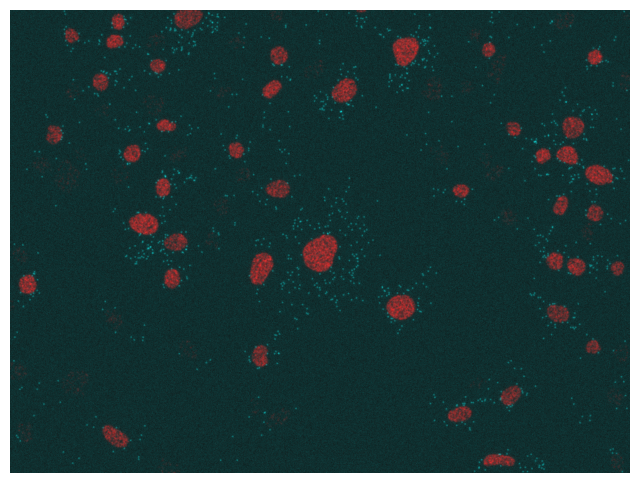
df_spots = df_spots.rename({'axis-0':'channel', 'axis-1':'y','axis-2':'x'},axis=1)
print(df_spots)
index channel y x
0 0 3.0 1036.608593 1374.287858
1 1 3.0 1036.347551 1161.474318
2 2 3.0 1036.123795 1151.153616
3 3 3.0 1035.210651 1042.966998
4 4 3.0 1032.543429 1066.596425
... ... ... ... ...
1156 1156 3.0 6.300192 445.306930
1157 1157 3.0 4.574181 1097.516912
1158 1158 3.0 3.412835 1378.409558
1159 1159 3.0 2.265379 691.332179
1160 1160 3.0 2.470842 121.888725
[1161 rows x 4 columns]
overlay_labels(
label_mask=[mask_cell, mask_nucleus], coordinates=df_spots[["y", "x"]].to_numpy()
)
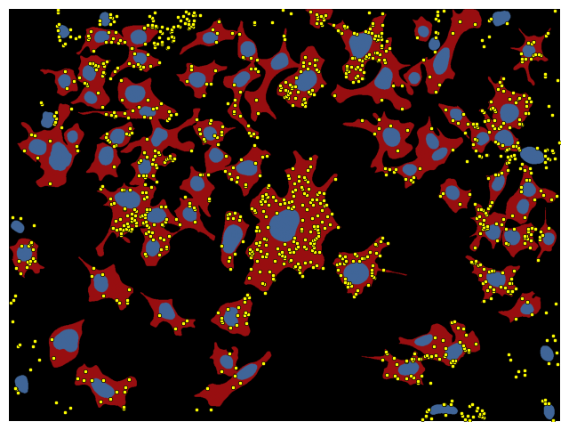
overlay_labels(label_mask=mask_cell)
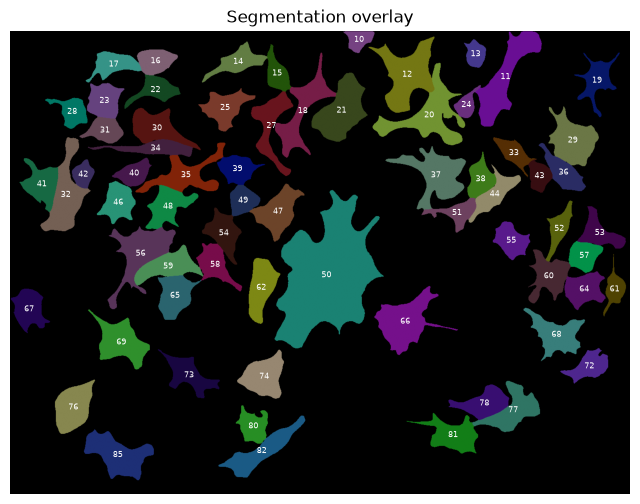
overlay_labels(label_mask=mask_nucleus, alpha=.5)
Create DataFrame for cells#
First, we generate a dataframe that contains all cells. We do this using the regionprops_table function.
properties = ["area", "label"]
props = skimage.measure.regionprops_table(mask_cell, properties=properties)
df_cell = pd.DataFrame(props)
print(df_cell)
area label
0 2139.0 10
1 10940.0 11
2 11639.0 12
3 2148.0 13
4 4373.0 14
.. ... ...
62 5359.0 78
63 3809.0 80
64 6289.0 81
65 7052.0 82
66 8976.0 85
[67 rows x 2 columns]
That was simple. This table now contains all labels of the cells.
Classify nuclei#
Now, we classify the each nucleus’ expression levels of the nuclear marker into on and off.
For that we use the label mask of the nuclei, the nuclear expression image and the regionpros_table function.
Measure properties#
properties = ["area", "intensity_mean", "label"]
props = skimage.measure.regionprops_table(
mask_nucleus, intensity_image=image_nuclear, properties=properties
)
df_nuc = pd.DataFrame(props)
print(df_nuc)
area intensity_mean label
0 1377.0 411.344227 6
1 796.0 1914.856784 8
2 744.0 1612.961022 9
3 643.0 420.241058 10
4 1222.0 354.035188 11
.. ... ... ...
72 1371.0 393.645514 83
73 1216.0 404.171875 84
74 1868.0 1580.623126 85
75 866.0 422.398383 86
76 1471.0 1869.467029 87
[77 rows x 3 columns]
Let’s add an image_id for book keeping.
df_nuc["image_id"] = image_path.stem
print(df_nuc)
area intensity_mean label image_id
0 1377.0 411.344227 6 F01_837
1 796.0 1914.856784 8 F01_837
2 744.0 1612.961022 9 F01_837
3 643.0 420.241058 10 F01_837
4 1222.0 354.035188 11 F01_837
.. ... ... ... ...
72 1371.0 393.645514 83 F01_837
73 1216.0 404.171875 84 F01_837
74 1868.0 1580.623126 85 F01_837
75 866.0 422.398383 86 F01_837
76 1471.0 1869.467029 87 F01_837
[77 rows x 4 columns]
Classify by intensity#
To understand where we should set our threshold for on / off, we can plot the intensity measurements as a histogram.
sns.histplot(
data=df_nuc,
x="intensity_mean",
bins=50,
)
<Axes: xlabel='intensity_mean', ylabel='Count'>
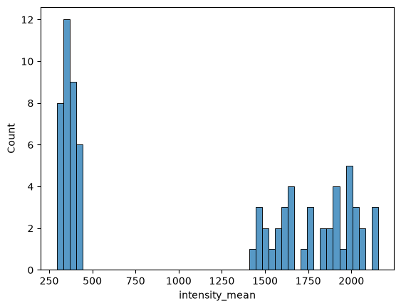
It seems like the expression is truly bimodal and 1,000 would be a good threshold.
Now, we classify the intensity of nuclei using the cut function as before.
df_nuc["expression"] = pd.cut(
df_nuc["intensity_mean"], bins=[0, 1000, np.inf], labels=["off", "on"]
)
print(df_nuc["expression"].unique())
['off', 'on']
Categories (2, str): ['off' < 'on']
overlay_labels(
image=image_nuclear,
label_mask=mask_nucleus,
df=df_nuc,
id_col="label",
measurement_col="expression",
)
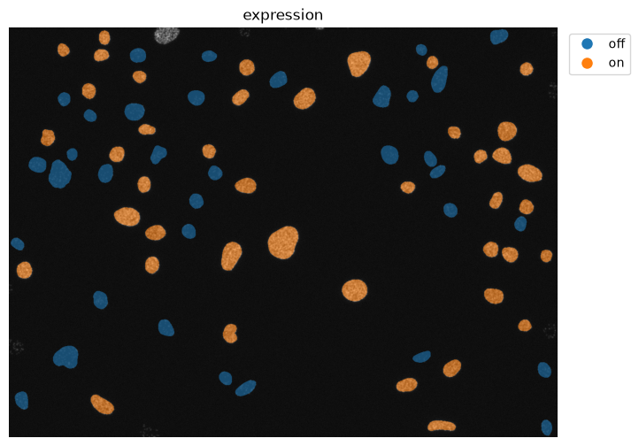
print(df_nuc)
area intensity_mean label image_id expression
0 1377.0 411.344227 6 F01_837 off
1 796.0 1914.856784 8 F01_837 on
2 744.0 1612.961022 9 F01_837 on
3 643.0 420.241058 10 F01_837 off
4 1222.0 354.035188 11 F01_837 off
.. ... ... ... ... ...
72 1371.0 393.645514 83 F01_837 off
73 1216.0 404.171875 84 F01_837 off
74 1868.0 1580.623126 85 F01_837 on
75 866.0 422.398383 86 F01_837 off
76 1471.0 1869.467029 87 F01_837 on
[77 rows x 5 columns]
Great! Now we have a DataFrame where each nucleus is classified as expressing or non-expressing.
Connecting the DataFrames#
We now have three DataFrames:
df_cellstores information about the cells, like their area and labeldf_nucstores information about the nuclei, including the expression statusdf_spotsstores the coordinates of the spots
We want to connect information about the nucleus (on/off) with information about the spots (how many/per cell). Both of these are properties of the cell, which makes it our central object. Another way of looking at this is that the cell is the unifying object that contains both the nucleus (and its expression state) and all the dots. Dots and nuclei are not directly connected.
Practically, this means we need to create two columns in df_cell:
nuclear_expression: that maps the expression classification of the nucleus to the cellnumber_of_spots: that contains how many spots exist in each cell
Map nuclear expression#
To map the expression of the nuclei to the cells, we need to know which nuclear label corresponds to which cell label. As we can see below, they are not identical.
overlay_labels(label_mask=mask_cell)
overlay_labels(label_mask=mask_nucleus)
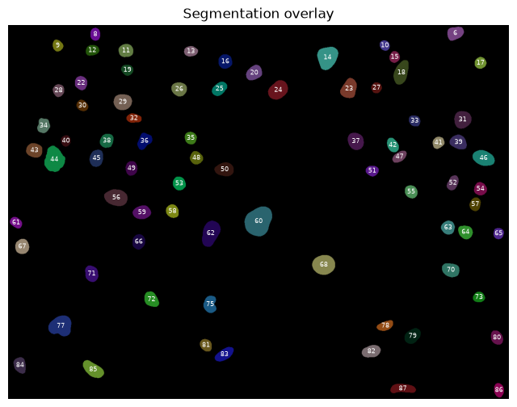
We can use regionprops_table to measure identify the cell label of each nucleus.
properties = ["intensity_mean", "label"]
labels = skimage.measure.regionprops_table(
mask_nucleus, intensity_image=mask_cell, properties=properties
)
df_merge = pd.DataFrame(labels)
df_merge = df_merge.rename({"intensity_mean": "label_cell"}, axis=1)
print(df_merge)
label_cell label
0 0.0 6
1 0.0 8
2 0.0 9
3 13.0 10
4 16.0 11
.. ... ...
72 82.0 83
73 0.0 84
74 85.0 85
75 0.0 86
76 0.0 87
[77 rows x 2 columns]
df_nuc = df_nuc.merge(df_merge, on="label", how="left")
print(df_nuc)
area intensity_mean label image_id expression label_cell
0 1377.0 411.344227 6 F01_837 off 0.0
1 796.0 1914.856784 8 F01_837 on 0.0
2 744.0 1612.961022 9 F01_837 on 0.0
3 643.0 420.241058 10 F01_837 off 13.0
4 1222.0 354.035188 11 F01_837 off 16.0
.. ... ... ... ... ... ...
72 1371.0 393.645514 83 F01_837 off 82.0
73 1216.0 404.171875 84 F01_837 off 0.0
74 1868.0 1580.623126 85 F01_837 on 85.0
75 866.0 422.398383 86 F01_837 off 0.0
76 1471.0 1869.467029 87 F01_837 on 0.0
[77 rows x 6 columns]
mapping = df_nuc.loc[df_nuc["label_cell"] != 0].drop_duplicates(
"label_cell", keep=False
)[["label_cell", "expression"]]
mapping
| label_cell | expression | |
|---|---|---|
| 3 | 13.0 | off |
| 4 | 16.0 | off |
| 5 | 17.0 | on |
| 6 | 14.0 | off |
| 7 | 12.0 | on |
| ... | ... | ... |
| 68 | 77.0 | on |
| 70 | 80.0 | off |
| 71 | 81.0 | on |
| 72 | 82.0 | off |
| 74 | 85.0 | on |
66 rows × 2 columns
df_cell = df_cell.merge(
mapping, left_on="label", right_on="label_cell", how="inner"
).drop(columns="label_cell")
print(df_cell)
area label expression
0 10940.0 11 off
1 11639.0 12 on
2 2148.0 13 off
3 4373.0 14 off
4 3178.0 15 on
.. ... ... ...
61 5359.0 78 off
62 3809.0 80 off
63 6289.0 81 on
64 7052.0 82 off
65 8976.0 85 on
[66 rows x 3 columns]
overlay_labels(
image=image_nuclear,
label_mask=mask_cell,
df=df_cell,
id_col="label",
measurement_col="expression",
)
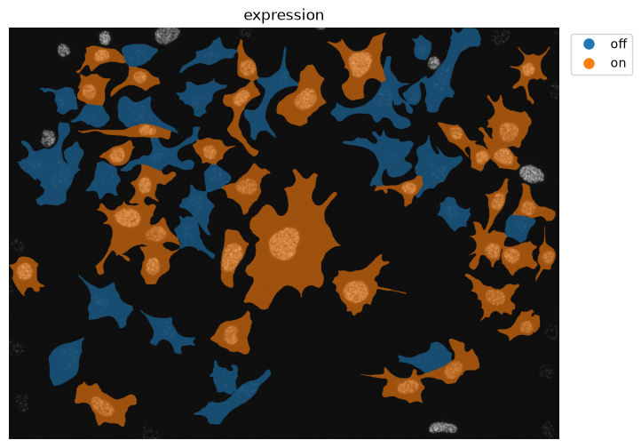
Map spot count#
Now we applyt the same strategy to map the number of spots to df_cell.
Per spot, identify which cell it belongs to
Count the number of spots per cell
Add that information to the cell dataframe
overlay_labels(label_mask=mask_cell, coordinates=df_spots[["y", "x"]].to_numpy())
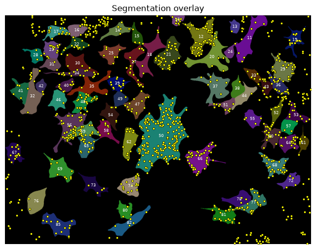
For each spot in df_spots we look up the cell label in mask_cell.
df_spots["label_cell"] = mask_cell[df_spots["y"].astype(int), df_spots["x"].astype(int)]
print(df_spots["label_cell"].unique())
[ 0 85 82 81 80 77 76 78 73 74 72 69 68 66 50 67 62 61 65 60 64 59 56 58
57 52 55 54 53 47 32 51 48 49 46 41 36 35 43 37 44 40 42 39 27 33 38 29
34 30 18 20 31 21 25 11 28 23 12 22 19 24 15 17 16 14 13 10]
Now we count the number of spots per cell_label.
sns.histplot(data=df_spots, x="label_cell", bins=len(df_spots["label_cell"].unique()))
<Axes: xlabel='label_cell', ylabel='Count'>
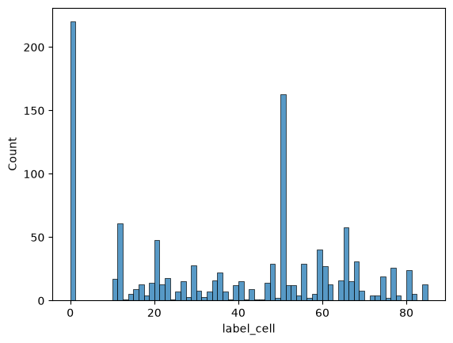
Remove spots with cell_label == 0. Those spots are outside of valid cells.
df_spots = df_spots.loc[df_spots["label_cell"] != 0]
print(df_spots)
index channel y x label_cell
25 25 3.0 1008.142417 288.266766 85
28 28 3.0 1003.216643 288.663090 85
37 37 3.0 991.103402 231.628243 85
41 41 3.0 984.213412 256.187646 85
43 43 3.0 966.446207 270.281314 85
... ... ... ... ... ...
1135 1135 3.0 18.652871 787.231528 10
1136 1136 3.0 18.447809 779.565676 10
1142 1142 3.0 16.098957 799.597937 10
1146 1146 3.0 12.406795 776.313067 10
1154 1154 3.0 6.637079 760.532552 10
[941 rows x 5 columns]
Now we count the spots per cell, I.e., per unique label_cell.
mapping = df_spots["label_cell"].value_counts().reset_index()
print(mapping)
label_cell count
0 50 153
1 12 61
2 66 44
3 21 41
4 59 40
.. ... ...
62 44 1
63 42 1
64 38 1
65 24 1
66 13 1
[67 rows x 2 columns]
Now we merge these measurements with df_cell.
df_cell = df_cell.merge(
mapping, left_on="label", right_on="label_cell", how="inner"
).drop(columns="label_cell")
print(df_cell)
area label expression count
0 10940.0 11 off 6
1 11639.0 12 on 61
2 2148.0 13 off 1
3 4373.0 14 off 5
4 3178.0 15 on 5
.. ... ... ... ...
61 5359.0 78 off 4
62 3809.0 80 off 3
63 6289.0 81 on 21
64 7052.0 82 off 5
65 8976.0 85 on 13
[66 rows x 4 columns]
sns.histplot(
data=df_cell,
x="count",
bins=20,
hue="expression",
)
<Axes: xlabel='count', ylabel='Count'>
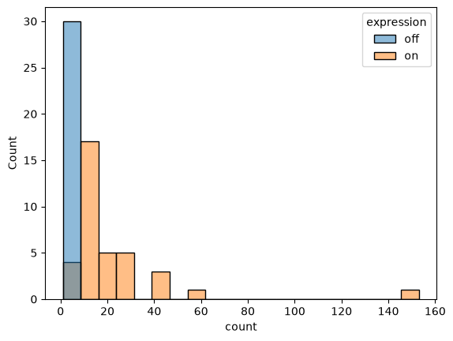
overlay_labels(
image=image_nuclear,
label_mask=mask_cell,
df=df_cell,
id_col="label",
measurement_col="count",
)
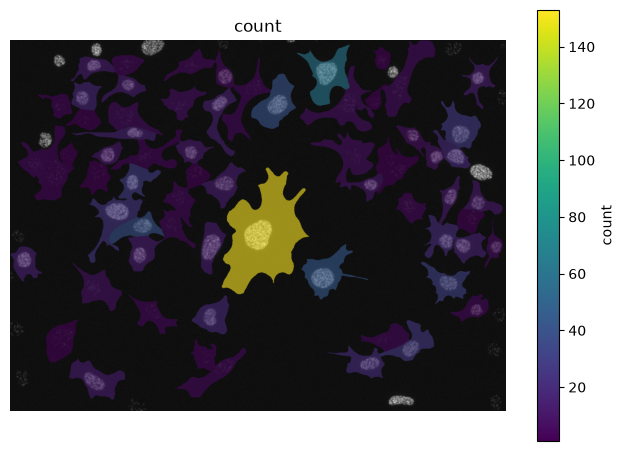
Normalisation#
We can see from the overlay above that the largest cell also has the most spots. This might be a case of size and number of spots being confunding variables; larger cells have more space and therefore more spots. Let’s normalise the spot count by area.
df_cell["spot_count_norm"] = df_cell["count"] / df_cell["area"]
print(df_cell["spot_count_norm"])
0 0.000548
1 0.005241
2 0.000466
3 0.001143
4 0.001573
...
61 0.000746
62 0.000788
63 0.003339
64 0.000709
65 0.001448
Name: spot_count_norm, Length: 66, dtype: float64
overlay_labels(
image=image_nuclear,
label_mask=mask_cell,
df=df_cell,
id_col="label",
measurement_col="spot_count_norm",
)
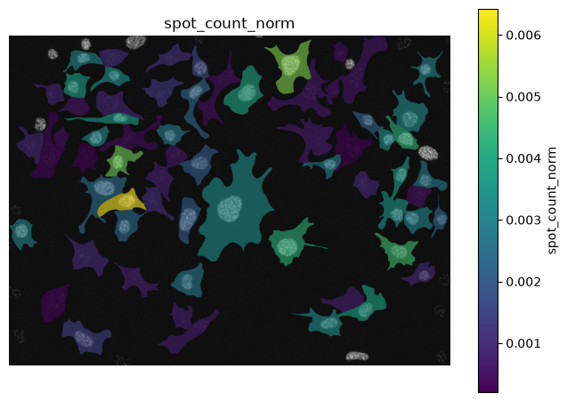
sns.histplot(data=df_cell, x="spot_count_norm", bins=20, hue="expression")
<Axes: xlabel='spot_count_norm', ylabel='Count'>
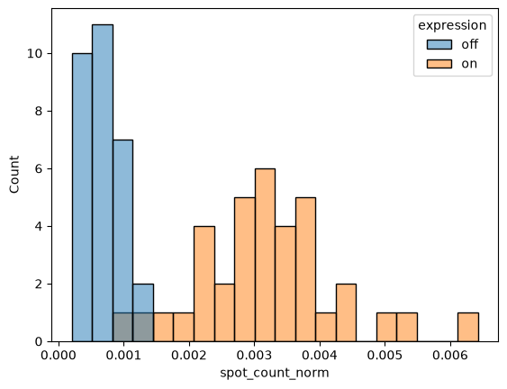
The picture is much clearer now.
Batch processing#
Now we set up batch processing to analyse all the images in the folder.
image_folder = Path("/Users/max/Desktop/bobiac_data/group-work-1/")
cell_mask_folder = Path("/Users/max/Desktop/bobiac_data/group-work-1/solution/cell_labels/")
nuc_mask_folder = Path("/Users/max/Desktop/bobiac_data/group-work-1/solution/nuclei_labels/")
spot_folder = Path("/Users/max/Desktop/bobiac_data/group-work-1/solution/spotiflow_points/")
image_paths = sorted(image_folder.glob("*.tif"))
list_df = []
for image_path in image_paths:
image_id = image_path.stem # e.g. F01_837
# load multi-channel image and extract nuclear channel
image = tifffile.imread(image_path)
image_nuclear = image[0]
# load masks and spot coordinates
mask_cell = tifffile.imread(cell_mask_folder / f"{image_id}_cell_labels.tif")
mask_nucleus = tifffile.imread(nuc_mask_folder / f"{image_id}_nuclei_labels.tif")
df_spots = pd.read_csv(spot_folder / f"{image_id}_points.csv")
df_spots = df_spots.rename({'axis-0':'channel', 'axis-1':'y','axis-2':'x'},axis=1)
# remove objects touching the border
mask_cell = skimage.segmentation.clear_border(mask_cell)
mask_nucleus = skimage.segmentation.clear_border(mask_nucleus)
# --- cell dataframe ---
df_cell = pd.DataFrame(
skimage.measure.regionprops_table(mask_cell, properties=["area", "label"])
)
# --- nucleus dataframe: measure and classify expression ---
df_nuc = pd.DataFrame(
skimage.measure.regionprops_table(
mask_nucleus,
intensity_image=image_nuclear,
properties=["area", "intensity_mean", "label"],
)
)
df_nuc["image_id"] = image_id
df_nuc["expression"] = pd.cut(
df_nuc["intensity_mean"], bins=[0, 1000, np.inf], labels=["off", "on"]
)
# --- map each nucleus to the cell it sits in ---
df_merge = pd.DataFrame(
skimage.measure.regionprops_table(
mask_nucleus,
intensity_image=mask_cell,
properties=["intensity_mean", "label"],
)
).rename(columns={"intensity_mean": "label_cell"})
df_nuc = df_nuc.merge(df_merge, on="label", how="left")
mapping_expr = df_nuc[df_nuc["label_cell"] != 0].drop_duplicates(
"label_cell", keep=False
)[["label_cell", "expression"]]
df_cell = df_cell.merge(
mapping_expr, left_on="label", right_on="label_cell", how="inner"
).drop(columns="label_cell")
# --- count spots per cell ---
df_spots["label_cell"] = mask_cell[
df_spots["y"].astype(int), df_spots["x"].astype(int)
]
df_spots = df_spots.loc[df_spots["label_cell"] != 0]
mapping_spots = df_spots["label_cell"].value_counts().reset_index()
df_cell = df_cell.merge(
mapping_spots, left_on="label", right_on="label_cell", how="inner"
).drop(columns="label_cell")
df_cell["spot_count_norm"] = df_cell["count"] / df_cell["area"]
df_cell["image_id"] = image_id
list_df.append(df_cell)
df_full = pd.concat(list_df, ignore_index=True)
---------------------------------------------------------------------------
ValueError Traceback (most recent call last)
Cell In[34], line 77
73
74 df_cell["image_id"] = image_id
75 list_df.append(df_cell)
76
---> 77 df_full = pd.concat(list_df, ignore_index=True)
File ~/work/bobiac-book/bobiac-book/.venv/lib/python3.12/site-packages/pandas/core/reshape/concat.py:407, in concat(objs, axis, join, ignore_index, keys, levels, names, verify_integrity, sort, copy)
402 else: # pragma: no cover
403 raise ValueError(
404 "Only can inner (intersect) or outer (union) join the other axis"
405 )
--> 407 objs, keys, ndims = _clean_keys_and_objs(objs, keys)
409 if sort is lib.no_default:
410 if axis == 0:
File ~/work/bobiac-book/bobiac-book/.venv/lib/python3.12/site-packages/pandas/core/reshape/concat.py:808, in _clean_keys_and_objs(objs, keys)
805 objs = list(objs)
807 if len(objs) == 0:
--> 808 raise ValueError("No objects to concatenate")
810 if keys is not None:
811 if not isinstance(keys, Index):
ValueError: No objects to concatenate
print(df_full)
area label expression count spot_count_norm image_id
0 8853.0 7 off 49 0.005535 F01_1296
1 9373.0 8 off 7 0.000747 F01_1296
2 3181.0 9 on 1 0.000314 F01_1296
3 2032.0 10 on 10 0.004921 F01_1296
4 4630.0 11 off 25 0.005400 F01_1296
.. ... ... ... ... ... ...
708 5716.0 82 on 48 0.008397 F01_972
709 2680.0 83 on 4 0.001493 F01_972
710 3589.0 86 on 16 0.004458 F01_972
711 3642.0 89 on 12 0.003295 F01_972
712 3548.0 92 on 18 0.005073 F01_972
[713 rows x 6 columns]
df_plot = (
df_full.groupby(["expression", "image_id"])[["count", "spot_count_norm"]]
.mean()
.reset_index()
)
df_plot
| expression | image_id | count | spot_count_norm | |
|---|---|---|---|---|
| 0 | off | F01_1296 | 16.263158 | 0.002314 |
| 1 | off | F01_1377 | 13.272727 | 0.001640 |
| 2 | off | F01_1457 | 21.428571 | 0.002420 |
| 3 | off | F01_1464 | 27.750000 | 0.002984 |
| 4 | off | F01_1465 | 20.714286 | 0.001492 |
| 5 | off | F01_1467 | 24.400000 | 0.002116 |
| 6 | off | F01_837 | 23.000000 | 0.002225 |
| 7 | off | F01_840 | 22.333333 | 0.001741 |
| 8 | off | F01_884 | 11.714286 | 0.001664 |
| 9 | off | F01_972 | 10.750000 | 0.001451 |
| 10 | on | F01_1296 | 9.068966 | 0.002210 |
| 11 | on | F01_1377 | 11.392157 | 0.002368 |
| 12 | on | F01_1457 | 18.717391 | 0.002488 |
| 13 | on | F01_1464 | 12.065574 | 0.002117 |
| 14 | on | F01_1465 | 12.048387 | 0.002209 |
| 15 | on | F01_1467 | 14.510870 | 0.002522 |
| 16 | on | F01_837 | 13.812500 | 0.002050 |
| 17 | on | F01_840 | 16.191781 | 0.002286 |
| 18 | on | F01_884 | 16.103896 | 0.002370 |
| 19 | on | F01_972 | 18.310345 | 0.002702 |
sns.boxplot(
data=df_plot,
x="expression",
y="count",
)
sns.swarmplot(data=df_plot, x="expression", y="count", c="k", s=10)
<Axes: xlabel='expression', ylabel='count'>
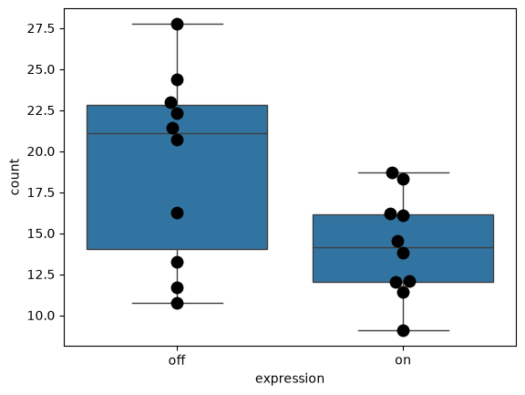
sns.boxplot(
data=df_plot,
x="expression",
y="spot_count_norm",
)
sns.swarmplot(data=df_plot, x="expression", y="spot_count_norm", c="k", s=10)
<Axes: xlabel='expression', ylabel='spot_count_norm'>
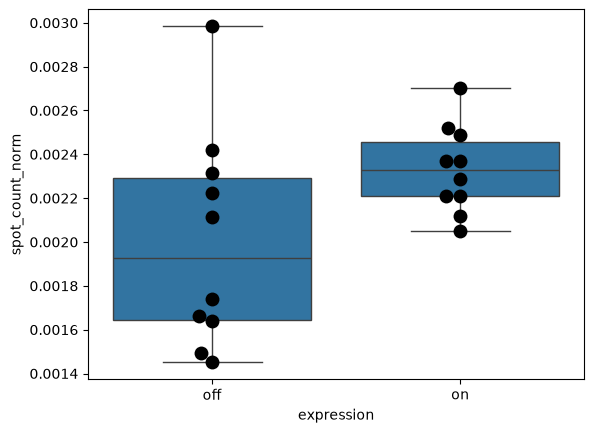
Conclusion#
We successfully integrated properties of different objects with each other. Handling these sort of nested measurements is a key aspect of analysing images.